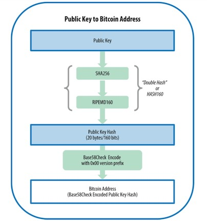
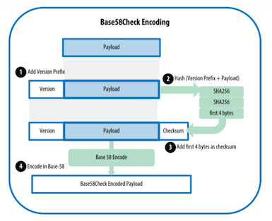

概述：从别从，比特币的发展历史，，，，，，
历史
- 2008年，Bitcoin是由署名Satoshi Nakamoto发明的，他出版了为“Bitcoin:A Peer-to-Peer Electronic Cash System”;结合了b-money和hashCash的发明，创建一个完全去中心化的电子现金系统，不依赖中央机构进行的货币发行或结算和验证交易。
- 2009年，基于中本聪（传言是澳大利亚人，目前尚未被确认身份）发布的参考实施指南，之后由许多程序员进行修订。
- 2014年，比特币背后的区块链技术被大家关注，并正式的发布分布式记账本（Distributed Ledger）技术的革新浪潮。
什么是比特币
本质上就是一个去中心化账本
一种建立于p2p和密码学基础上的数据货币
密码学和分布式系统的组合产物
比特币的特点：
- 去中心化的点对点网络
比特币的传输协议，或者是说脚本的传输协议
- 区块链
存放交易的数据链
块，时间戳，难度系数，交易集合
- 共识机制
货币的发行规则（是一种奖励规则，解决货币的流通的问题）
交易的验证规则（交易引用，解决交易双花问题）
交易数据一致性（去中心化，引入工作量证明，解决由谁来写入区块链的问题）
脚本的网络传输协议（解决个个节点之间的区块同步问题）
- 货币所有权的证明
公钥，私钥，匿名化交易
比特币是如何发行的
比特币没有特定的发行机构，而是依靠一套去中心化的发行机制，逐步将比特币发行出去；比特币系统相当于一个去中心化的大账本，每个区块就是这一个账本中的一页，系统自动生成比特币作为奖励激励矿工参与记账；
每十分钟全体矿工一起计算一道问题，最先算出的矿工获得记一页账的权利，经过100个块确认后，矿工将自动的获得一定数量的比特币；
最开始记账一次获取50个比特币，每记21万页账（大约需要4年）记账的奖励就会减少一半，直到大约2140年，比特币无法细分，直至发行完毕，总量2100万枚；
什么是比特币的钱包
比特币的钱包是存放用户的私钥和公钥的；和现实的钱包不太一样
1.密码学的基础
哈希运算
又称为散列函数，把任意长度的输入（又叫做预映射pre-image）通过散列算法变换成固定长度的输出，该输出就是散列值
f（x）不可逆，只能正向运算
极难找到hash值相同的
正向运算快，即时原文很大
无论原文多大，都压缩固定位数的16进制
非对称加密
密钥是一对，拥有公开密钥和私有密钥，随机生成一个私钥，然后通过椭圆曲线算法得到公钥
公钥加密，只有私钥可解开
私钥签名，可以用公钥验证
base58和base58cheack
为了更简洁的表示长串的数字，使用更少的符号来表示
比特币钱包的地址：

比特币钱包的验证：

2.钱包都有哪些类型
- 全节点钱包客户端
- 简单支付客户端SPV
- 基于第三方客户端程序接口
3.生成自己的钱包
私钥，随机32位字符（256位随机数）
公钥，椭圆曲线加密SECP2561算法
公钥哈希值，SHA256(公钥)
公钥哈希值，ripemd160(公钥哈希值)
校验码，SHA256(SHA256(1个字节版本号0x00+公钥哈希值))，取前4个字节
base58(1个字节版本号0x00+公钥哈希值+校验码)
得到钱包地址
比特币怎么完成交易的
比特币系统雨传统的银行支付系统不同，是基于去中心化的信任，在比特币中取代了中央信任机构，信任通过各个节点之间的互相参与互相达成的；
交易的概述
在比特币系统中由用户（通过私钥控制的钱包），将每一笔的交易广播到整个比特币的网络中，矿工通过竞争计算生成的每个节点达成的共识的区块（包含当前网络中所发生的所有的交易），然后将其区块同步到其它的节点；
比特币的持有者已授权把比特币转账给其他人，而持有者能够再次授权，转移给该比特币所有权链中的其他人，产生另一笔交易来花掉这些比特币，后面的持有者在花费比特币也是类似的方式；
整个交易的传递，其实就是所有权的证明转移，这就是为什么说，区块链实现的是价值的转移，而非单纯互联网信息传递；
首先如何获得第一个比特币
挖矿basecoin
场外交易
怎么计算自己的余额
未花费的交易(UTXO)
交易没有被引用
怎么转账
组合UTXO，大于交易的金额
如何找零
将剩下的钱，转入自己的钱包中
交易费用
交易的小费是按照字节大小来计算的
完整交易的输入和输出
例如，用户a转账10个比特币给用户b
任何交易都有上一个交易的引用，或是说有多个输入或多个输出；
a用户给b用户转账的交易明细如下：
输入：解锁脚本(私钥验证签名)
[
a用户用自己的私钥，验证签名得到未花费的交易1,
a用户用自己的私钥，验证签名得到未花费的交易2
]
输出：锁定脚本（转出公钥证明）
[
目标b用户的公钥，
目标a用户的公钥（用于找零）
]
交易的传输
交易的验证
挖矿写入区块链中
最终如何确认交易完成
b如何花费该笔交易
交易的细节讲解
生活中我们都有自己的银行账户，转账是在银行账户之间进行的。同样，比特币转账就是把比特币从一个比特币地址转移到另一个比特币地址上的过程。如果你想要转账比特币给别人，你需要在比特币交易平台、比特币钱包或者比特币客户端中，输入你的比特币地址、接收方地址、转账金额和手续费金额。确定支付后交易信息会在比特币网络进行全网广播。矿工每隔10分钟会将比特币网络中未被记账的交易打包进一个区块，这就完成了一次确认，此时比特币已转到对方账户。通常需要经过6次确认，确保交易记录不能被任何人窜改，转账才算真正完成。
交易的本质
交易的输入和输出
交易费
如何找零
一个完整的交易例子说明
挖矿的细节讲解
挖矿是数字货币一个创新，解决了数据一致性的问题；
比特币通过挖矿产生，每10分钟，全网矿工一起计算一道算术题，谁先算出答案，就相当于挖到了这个区块，这个过程叫做挖矿；
那么是什么样的算术题呢？
首先，每个区块上有一难度系数，将随机产生hash256的值进行计算，需要小于该难度系数；
将交易信息+自增长的数字，进行hash256，得到64位的16进制，转换为二进制2256次方的值；
0xFFFFFFFFFFFFFFFFFFFFFFFFFFFFFFFFFFFFFFFFFFFFFFFFFFFFFFFFFFFFFFFF
这是一个极大的值，例如随机产生一个2256次方的值都小于该值；
为了增加计算的时间，我们将值缩小，例如：0x0000FFFFFFFFFFFFFFFFFFFFFFFFFFFFFFFFFFFFFFFFFFFFFFFFFFFFFFFFFFFF
1 Khash/s = 1000 hash/s
1 Mhash/s = 1000 Khash/s
1 Ghash/s = 1000 Mhash/s
1 Shash/s = 1000 Ghash/s
1 PHash/s = 1000 Shash/s = 1000000000000000 hash/s
难度系数：
0x0000000000000000000FFFFFFFFFFFFFFFFFFFFFFFFFFFFFFFFFFFFFFFFFFFFF
nonce的最大值232次方
比特币里nonce的预设太小了。对于现在的挖矿难度，当交易的merkle tree给定后，在32bit的nonce里面找到解的概率忽略不计。一台专业矿机在秒为单位的时间内就能穷举完nonce的所有可能。nonce太小，Merkle tree root来凑。现在的做法是不断的改变coinbase交易，带动merkle tree变化，再循环穷举nonce。针对一个给定的merkle tree root，nonce穷举完了，还没找到解，接着改coinbase来换新的merkle tree root，开始新的nonce穷举，如此重复，直到找到解为止。
如何改变coinbase交易？
1000笔交易的顺序可能有，1000!个阶乘计算，这个数字是极其大的
预留了232次方,那么最大的值是2224次方
D*2^32/600
时间=难度*2^32/算力
随着运算的提高，难度系统也再增加，每2014块（两周）会调整一下，难度系数，确保产生的块平均维持在10分钟左右，不至于过快的将币挖完；
比特币的脚本讲解
比特币的p2p网络